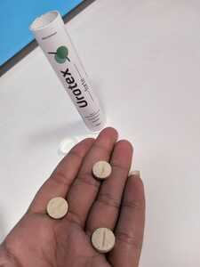
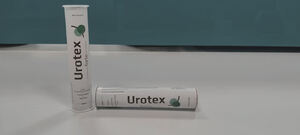

मूत्र रोग विशेषज्ञ – महिलाओं के पास मूत्र असंयम एक खतरनाक पैथोलॉजी है। हालांकि, आज इसका इलाज घर पर ही आसानी से हो जाता है।
आंकड़ों के अनुसार 50 वर्ष से अधिक उम्र की 72% महिलाओं (30 वर्ष से अधिक उम्र की 37% महिलाओं) में मूत्र असंयम और मूत्र रिसाव का निदान किया जाता है। इस पैथोलॉजी में सबसे खतरनाक बात यह है कि यह समय के साथ बेहतर नहीं होगा – और अधिक से अधिक “मूत्र रिसाव” होंगे। इसलिए कपड़ों पर गीले धब्बे और अप्रिय गंध ही बढ़ेंगे।
हालांकि, आधुनिक साधनों के उपयोग करने से इस पैथोलॉजी से छुटकारा पाना मुश्किल नहीं है। भारत की प्रमुख मूत्र रोग विशेषज्ञ सीता तड़वी महिलाओं में मूत्र असंयम के इलाज के आधुनिक तरीकों के बारे में बात करती हैं।
- सीता, महिलाओं के लिए मूत्र असंयम कितना खतरनाक है?
वास्तव में कई महिलाओं को इस बात की जानकारी भी नहीं होती है कि यह एक गंभीर समस्या है। और वे इसके परिणामों को कम आंकती हैं। कई महिलाओं को उम्मीद है कि समय के साथ यह गायब हो जाएगी। लेकिन यह कभी दूर नहीं जाती है। मूत्र असंयम न केवल महिला के जीवन को बर्बाद कर सकता है – इस समस्या और लगातार गंध के कारण महिला अपने आसपास के लोगों के साथ कठिन और तनावपूर्ण संबंध विकसित करती है। इसके अलावा, यह पूरी तरह से उचित नहीं है — जिन लोगों को मूत्र की तरह गंध आती है, वे आमतौर पर टाल जाते हैं। यह गंध मनुष्यों के लिए अप्रिय है।
लेकिन, फिर भी, इस पैथोलॉजी का मुख्य खतरा यह है कि नम और गर्म वातावरण जल्दी से उस रोगजनक माइक्रोफ्लोरा को गुणा करता है, जो योनि में प्रवेश करता है और इसके श्लेष्म झिल्ली पर बस जाता है।
आंकड़ों के अनुसार, नियमित मूत्र असंयम होने के 1-2 महीने बाद महिला के पास योनि में डिस्बैक्टीरियोसिस विकसित होता है और 3-4 महीने के बाद क्रोनिक कोल्पाइटिस या योनिशोथ विकसित होता है। लगभग एक साल के बाद मूत्र असंयम वाली महिलाओं को (और जिन्हें पर्याप्त उपचार नहीं मिला है) सौम्य ट्यूमर का निदान किया जाता है। और सिस्ट्स बहुत बड़ी संख्या में दिखाई देते हैं। और अस्वास्थ्यकर माइक्रोफ्लोरा इसमें योगदान देता है। किसी भी समय के बाद ये संरचनाएँ घातक में विकसित हो सकती हैं।
यदि सहज पेशाब को अनुपचारित छोड़ दिया जाता है, तो यह मूत्राशय के पूरी तरह से पेशाब करना बंद कर देने और कैथीटेराइजेशन का सहारा लेने के साथ समाप्त हो जाएगा। इस प्रक्रिया में मूत्राशय में एक कैथेटर डालना शामिल है, जो पैर से निलंबित मूत्र रिसेप्टर से जुड़ता है। और यह एक विकलांगता है।
वास्तव में, जो महिला पेशाब न करने के लिए संघर्ष करती है (या बिल्कुल भी संघर्ष नहीं करती है), वह टिक टिक टाइम बम पर जी रही है। और मैं ईमानदारी से समझ नहीं पा रही हूँ, कि महिलाएँ ऐसा क्यों करती हैं। आज तक मूत्र असंयम के उपचार करने के लिए काफी प्रभावी तरीके और दवाएँ हैं। और 2-3 सप्ताह के बाद आप इस समस्या को भूल सकती हैं।
- क्या, आप सर्जिकल तरीकों के बारे में बात कर रही हैं?
- बिल्कुल नहीं। और इससे भी ज्यादा, मैं इसी तरह के ऑपरेशन से सभी को दूर करना चाहती हूँ। जिसमें लेजर और स्लिंग विधि का उपयोग करना शामिल है। इस तरह के जोड़तोड़ की उच्च गति के बावजूद (जैसे क्लीनिक और बेईमान विशेषज्ञ जो पैसे को आकर्षित करना चाहते हैं), इन ऑपरेशनों के महिला के स्वास्थ्य के लिए बहुत सारे नकारात्मक परिणाम होते हैं, क्योंकि वे शरीर के अंदर पहले से ही मूत्र के ठहराव की ओर ले जाते हैं, और इससे समान सिस्ट्स का पूर्ण विकास होता है। लेकिन सर्जिकल हस्तक्षेप का मुख्य नुकसान यह है, कि यह अनिवार्य रूप से समस्या का केवल एक कॉस्मेटिक उन्मूलन है, अर्थात यह रोग के परिणाम का उन्मूलन है, न कि इसके कारण का उन्मूलन है।
क्योंकि कारण बना रहता है, समस्या भविष्य में फिर से प्रकट होती है। और यह बहुत जल्दी प्रकट होती है – 1-2 वर्षों में।
यदि आप मूत्र असंयम से हमेशा के लिए छुटकारा पाना चाहती हैं, तो आपको इसके कारण को खत्म करने की आवश्यकता है। और इसका कारण अग्न्याशय का खराब कामकाज है। अंतःस्रावी विकारों के कारण शरीर ग्लूकोज और ग्लाइकोलाइसिस के हानिकारक उत्पादों (अग्न्याशय द्वारा किए गए ग्लूकोज ऑक्सीकरण की प्रक्रिया) से अधिक संतृप्त होता है। मूत्र में बड़ी मात्रा में निहित ये पदार्थ कैल्शियम और मैग्नीशियम को “धो” देते हैं, जो मांसपेशियों को लोच प्रदान करते हैं। नतीजतन, मांसपेशियाँ कमजोर हो जाती हैं और मूत्र प्रतिधारण बंद हो जाता है।
ऑपरेशनों के दौरान, मांसपेशियों में तनाव होता है, लेकिन कैल्शियम और मैग्नीशियम की लीचिंग जारी रहती है। इससे समस्या फिर से प्रकट हो जाती है। इसलिए, हमारे अभ्यास में हमने मूत्र असंयम के लिए सर्जिकल हस्तक्षेप की सिफारिश करना बंद कर दिया है।
- मूत्र असंयम को दूर करने के लिए अब आप क्या सलाह देंगी?
- एक बहुत अच्छी यूरोपीय दवा होती है। यह विशेष रूप से इस स्थिति का इलाज करने के लिए डिज़ाइन की गई है और यह काफी सरल, असाधारण रूप से प्रभावी है - यह लगभग सभी की मदद करती है!
इसमें 3 महत्वपूर्ण क्रियाएँ हैं। सबसे पहले, यह अग्न्याशय की गतिविधि को सामान्य करती है। दूसरे, यह ग्लूकोज और ग्लाइकोलाइसिस के अवशिष्ट उत्पादों से शरीर के तरल पदार्थों को साफ करती है। तीसरा, यह मूत्राशय की दीवारों और मांसपेशियों को पुनर्स्थापित करती है। यानी इसमें आवश्यक क्रियाओं की पूरी श्रृंखला है।
साथ ही, का उपयोग करने के केवल दो सप्ताह में दाग जल्दी से गायब हो जाते हैं, लॉन्ड्री सूख जाती है। रोग को पूरी तरह से ठीक करने के लिए, अग्न्याशय के काम को सामान्य करने और श्रोणि और मूत्राशय की मांसपेशियों को मजबूत करने के लिए, एक नियम के रूप में, यह उपचार के पूर्ण पाठ्यक्रम को पूरा करने के लिए पर्याप्त है। दुर्लभ मामलों में, अधिक समय की आवश्यकता हो सकती है।
यह दवा नई और बहुत प्रभावी है, जिसे स्विट्जरलैंड में विकसित किया गया है। इसके विकास में विश्व के सर्वश्रेष्ठ वैज्ञानिकों ने भाग लिया है।
का उपयोग मल असंयम के लिए भी किया जा सकता है (एक नियम के रूप में यह पैथोलॉजी बुजुर्गों में होती है)।
- क्या, यह दवा प्रिस्क्रिप्शन के द्वारा बेची जाती है? क्या, इसे लेना शुरू करने के लिए मूत्र रोग विशेषज्ञ के पास जाने की आवश्यकता है?
- की सबसे अच्छी बात यह है, कि इसे घर पर भी लिया जा सकता है। हर कोई जानता है, कि इस तरह की नाजुक समस्या के बारे में महिलाओं (और पुरुषों) दोनों को डॉक्टरों से परामर्श करने की कोई जल्दी नहीं है। यह शर्मनाक और असुविधाजनक है। के साथ आपको यह नहीं करना है!
प्रिस्क्रिप्शन के बिना बेची जाती है। यह पूरी तरह से प्राकृतिक दवा है, जिसमें केवल औषधीय पौधों के अर्क होते हैं। इसमें ट्रिबुलस टेरेस्ट्रिस (Tribulus Terrestris), अजमोद, जुनिपर शामिल हैं।
चूंकि दवा किसी भी रसायन को बाहर करती है, इसलिए इसे स्वास्थ्य को नुकसान पहुंचाने के खतरे के बिना लिया जा सकता है। यानी यह घर पर लेने के लिए आदर्श है।
मुख्य क्रियाओं के अलावा, के अतिरिक्त प्रभाव होते हैं –
- सूजन को कम करती है
- मूत्र पथ के संक्रमण को रोकती है
- पेशाब को आसान और तेज़ बनाती है
- कैंडिडिआसिस और सिस्टिटिस से निपटने में मदद करती है
- शरीर की रोग प्रतिरोधक क्षमता को बढ़ाती है
- श्रोणि अंगों में रक्त परिसंचरण में सुधार करती है
- शरीर को भरपूर मात्रा में विटामिन और खनिज प्रदान करती है
- सीता, इस दवा की कीमत कितनी है और हम इसे किन फार्मेसियों में खरीद सकते हैं?
- दुर्भाग्य से, यह फार्मेसियों में नहीं बेची जाती है, जहाँ तक मुझे पता है, निर्माता और फार्मेसी श्रृंखला इसकी बिक्री की शर्तों पर सहमत नहीं हो सके हैं। चूंकि दवा प्रभावी है, और जब इसकी बिक्री शुरू होती है, तो पेशाब को सामान्य करने वाली अन्य दवाएँ बदतर रूप से बिकेंगी, फ़ार्मेसियाँ के लिए उच्च कीमत निर्धारित करने की पेशकश करती हैं। लेकिन निर्माता ने ऐसा नहीं किया है। इसलिए, भारत में फार्मेसियों में नहीं बेची जाती है। हालांकि, इसे आधिकारिक वेबसाइट पर ऑर्डर किया जा सकता है।
काफी महंगी दवा है – इसकी सामान्य कीमत काफी अच्छी है। लेकिन हम भारतीय महिलाओं को खरीदने का मौका देते हुए, राज्य के समर्थन को प्राप्त करने और दवाओं के एक बड़े बैच को खरीदने में कामयाब रहे हैं। लेकिन यह ऑफ़र तक ही चलेगा।
यानी इस तारीख से पहले आपको आधिकारिक वेबसाइट पर एक ऑर्डर छोड़ना होगा। मैं मूत्र असंयम से पीड़ित सभी महिलाओं को इसकी सलाह देती हूँ। को लेने के कुछ हफ़्तों के बाद भी आपको यह समस्या याद नहीं रहेगी।
वैसे, और एक बार फिर दवा की प्रभावशीलता के बारे में। अब वेबसाइट पर हम उन खरीदारों के बीच एक सर्वेक्षण कर रहे हैं, जिन्होंने की कोशिश की है। अब तक 2000 से अधिक महिलाओं ने सर्वेक्षण में भाग लिया है। एकमात्र सवाल यह है, कि क्या ने आपको मूत्र असंयम से छुटकारा पाने में मदद की है?
वोटिंग परिणाम –
- हाँ, समस्या पूरी तरह से हल हो गई है – उत्तरदाताओं का 96.7%
- आंशिक रूप से मदद मिली है, यह बहुत बेहतर हुआ, लेकिन समस्या बनी रही है – उत्तरदाताओं का 2.6%
- बिल्कुल भी मदद नहीं की है – उत्तरदाताओं का 0.3%
- उत्तर देने में कठिनाई है – उत्तरदाताओं का 0.4%
जैसा कि आप देख सकते हैं, लगभग सभी की मदद करती है!
- सीता, साक्षात्कार के लिए बहुत-बहुत धन्यवाद। क्या, आप हमारे पाठकों से कुछ और कहना चाहेंगी?
मैं सभी के अच्छे स्वास्थ्य की कामना करना चाहती हूँ। अपने शरीर को अपंगता में न लाएँ! प्रारंभिक अवस्था में किसी भी पैथोलॉजी का इलाज करना बहुत आसान होता है। मूत्र असंयम भी सहित है! स्वस्थ रहें!
टिप्पणियाँ
उत्पाद बहुत अच्छा है। मुझे लगभग एक साल से मूत्र असंयम है। यह तीसरी गर्भावस्था के बाद दिखाई दिया। मैंने कई रूढ़िवादी उपचारों की कोशिश की है। केवल ने ही मेरी मदद की। अब सब ठीक है। मैं सभी को सलाह देती हूँ।
मैं केवल 20 साल की हूँ, मैं बहुत बार शौचालय जाती हूँ। 20:00 बजे के बाद मैं कोशिश करती हूँ, कि मैं पानी न पीऊँ। मैं हमेशा सोने से पहले बाथरूम जाती थी। लेकिन किसी भी मामले में बिस्तर अक्सर दागदार होता था। मैं अपने प्रेमी के सामने शर्मिंदा थी, लेकिन वह इसे समझ गया। मैंने इलाज कराने की कोशिश की, लेकिन सब बेकार था। करीब 2 महीने पहले एक विशेषज्ञ ने मुझे फोन किया और कहा, कि एक दवा होती है, जो मेरी मदद कर सकती है। और इस दवा ने मेरी मदद की, अब मैं अपने अंडरवियर में बिल्कुल भी पेशाब नहीं करती। असंयम पूरी तरह से चला गया है। 
मैंने यह कोशिश नहीं की है, लेकिन मुझे पता है, कि मेरी सहेली की बहन को मूत्र संबंधी समस्या थी। यह रजोनिवृत्ति के बाद थी। उसने भी ली है और इससे उसे मदद मिली है।
कई लोगों का कहना है कि महिलाओं को 3 किलो से ज्यादा वजन नहीं उठाना चाहिए। हम जीवन भर शॉपिंग बैग ले जाती हैं, और फिर हम बीमार हो जाती हैं और किसी को उनकी आवश्यकता नहीं होती है। इसी समस्या की वजह से मेरा पति मुझे छोड़कर चला गया है। वह एक नई लड़की के पास गया है।
जब मैं एक विशेषज्ञ के पास गई हूँ, तो उसने मुझे अंतरंग मांसपेशियों को प्रशिक्षित करने की सलाह दी है। मैंने ऐसा किया, मैं बेहतर हो गई। लेकिन फिर भी पेशाब का रिसाव हो रहा था, पेशाब से बदबू आ रही थी। और अंत में केवल ने ही मेरी मदद की है। सामान्य तौर पर, यह एक बहुत अच्छी दवा है।
शुक्रिया। हमें ऑर्डर करना चाहिए। उम्मीद होती है।।
इसके अलावा, मेरे मूत्राशय की मांसपेशियां कमजोर हैं। अगर मुझे छींक आती है, तो मैं पेशाब करती हूँ। ज्यादा नहीं, लेकिन कपड़े बदलने के लिए काफी है। मैं की कोशिश करूंगी। साथ ही इतना अच्छा कार्यक्रम।
इस दवा से हम दादी माँ के मूत्र असंयम का इलाज करते है!!! वह 75 साल की हैं। वह चाहती थी, लेकिन उसके पास बाथरूम जाने का समय नहीं था। इससे पहले, उसने अन्य दवाएँ लीं, लेकिन उन्होंने उसकी मदद नहीं की थी। दोस्तों की सलाह पर हमने ट्राई किया है। समस्या दूर हो गई है)
सर्जरी के बारे में सच्चाई है। मेरे काम की सहयोगी 56 साल की है। पिछले साल मूत्र असंयम के लिए उसकी सर्जरी हुई थी। वह 10 महीने तक खुश रही थी और फिर यह सब शुरू हो गया है। ऑपरेशन के बाद ठीक होने में काफी समय लगा था।
मेरे पिछले प्रसव के बाद, मुझे मूत्र असंयम था। यह यूं ही दूर नहीं हुआ। लगभग एक साल बीत चुका है। जब मुझे छींक आई, उदाहरण के लिए, मूत्र दो महीने पहले मैंने की खोज की। मैंने इसे ऑर्डर करने का फैसला किया। उसने मेरी मदद की। अब मेरी पैंटी हमेशा सूखी रहती है। और हाँ, यह बेहतर हो गया। ऐसा लगता है कि मांसपेशियां बेहतर हो गई हैं।
आपको धन्यवाद! प्रबंधक ने कहा कि बहुत कम प्रचार उत्पाद बचा था। सौभाग्य से, मैंने ऑर्डर दिया।
यह वास्तव में कुछ अद्भुत है! ने मेरी बहुत मदद की! मुझे उस समस्या से छुटकारा मिल गया, जिसका मैं कई सालों से सामना कर रही थी!! इस लेख के लिए बहुत-बहुत धन्यवाद! मैं इसे 3 सप्ताह से ले रही हूँ और पहले से ही परिणाम देख रही हूँ। यूरोपीय वैज्ञानिक सर्वश्रेष्ठ हैं!! 
शुक्रिया।
सिफारिश के लिए धन्यवाद। मैंने ऑर्डर किया। और वास्तव में यह की है। मैंने उसके बारे में बहुत सारी अच्छी बातें सुनी हैं। लेकिन मैं इसे फार्मेसियों में नहीं ढूंढ सकी हूँ। अब मैं समझता हूँ, क्यों।